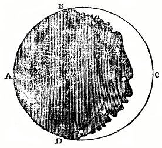
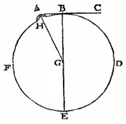
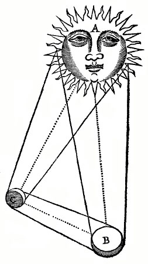
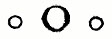

If amongst thy lesiure houres thou canst spare any for the perusall of this discourse, and dost
looke to finde somewhat in it which may serve for thy information and benefit: let me then advise thee to come unto
it with an equall minde, not swayed by prejudice, but indifferently resolved to assent unto that truth which upon
deliberation shall seeme most probable unto thy reason, and then I doubt not, but either thou wilt agree with mee in
this assertion, or at least not thinke it to be as farre from truth, as it is from common opinion.
Two cautions there are which I would willingly admonish thee of in the beginning.
That thou shouldst not here looke to find any exact, accurate Treatise, since this discourse was but the
fruit of some lighter studies, and those too hudled up in a short time, being first thought of and finished in
the space of some few weekes, and therefore you cannot in reason expect, that it should be so polished, as
perhaps, the subject would require, or the leisure of the Author might have done it.
To remember that I promise onely probable arguments for the proofe of this opinion, and therefore you must
not looke that every consequence should be of an undeniable dependance, or that the truth of each argument
should be measured by its necessity. I grant that some Astronomicall appearances may possibly be solved
otherwise then here they are. But the thing I aime at in this, that probably they may so be solved, as I have
here set them down: Which, if it be granted (as I think it must) then I doubt not, but the indifferent reader
will find some satisfaction in the maine thing that is to be proved.
Many ancient Philosophers of the better note, have formerly defended this assertion, which I have laid downe, and
it were to be wished, that some of us would more apply our endeavours unto the examination of these old opinions,
which though they have for a long time lien neglected by others, yet in them may you finde many truths well worthy
your paines and observation. Tis a false conceit, for us to thinke, that amongst the ancient variety and search of
opinions, the best hath still prevailed. Time (saith the learned Verulam [Francis Bacon]) seemes to be of the
nature of a river or streame, which carrieth downe to us that which is light, or blowne up, but sinketh that which
is weighty and solid.
It is my desire that by the occasion of this discourse, I may raise up some more active spirit to a search after
other hidden and unknowne truthes. Since it must needes be a great impediment unto the growth of sciences, for men
still so to plod on upon beaten principles, as to be afraid of entertaining any thing that may seeme to contradict
them. An unwillingnesse to take such things into examinaton, is one of those errours of learning in these times
observed by the judicious Verulam. Questionlesse there are many secret truths, which the ancients have passed
over, that are yet left to make some of our age famous for their discovery.
If by this occasion I may provoke any reader to an attempt of this nature, I shall then thinke my selfe happy,
and this worke successefull.
Farewell.
The First Proposition, by way of Preface
That the strangenesse of this opinion is no sufficient reason why it should be rejected, because other
certaine truths have beene formerly esteemed ridiculous, and great absurdities entertayned by common
consent.
...I must needs confesse, though I had often thought with my selfe that it was possible there might be a world in
the Moone, yet it seemed such an uncouth opinion that I never durst discover it, for feare of being counted
singular and ridiculous, but afterward having read Plutarch, Galilæus, Keplar, with some others, and finding
many of mine owne thoughts confirmed by such strong authority, I then concluded that it was not onely possible
there might bee, but probable that there was another habitable world in that Planet.
In the prosecuting of this assertion, I shall first endeavour to cleare the way from such doubts as may hinder
the speed or ease of farther progresse; and because the suppositions imply'd in this opinion may seeme to
contradict the principles of reason or faith, it will be requisite that I first remove this scruple, shewing the
conformity of them to both these, and proving those truths that may make way for the rest....
Proposition 2
That a plurality of worlds doth not contradict any princple of reason or faith.
Proposition 3
That the heavens doe not consist of any such pure matter which can priviledge them from the like change and
corruption, as these inferiour bodies are liable unto.
Proposition 4
That the Moone is a solid, compacted, opacous body.
Proposition 5
That the Moone hath not any light of her owne.
Proposition 6
That there is a world in the Moone, hath beene the direct opinion of many ancient, with some moderne
Mathematicians, and may probably be deduced from the tenents [tenets] of others.
Proposition 7
That those spots and brighter parts which by our sight may be distinguished in the Moone, doe shew the
difference betwixt the Sea and Land in that other World
Proposition 8
The spots represent the Sea, and the brighter parts the Land.
...[S]ince [the moon] moves so swiftly as Astronomers observe, why then does there nothing fall from her, or why
doth shee not shake something out by the celerity [speed] of her revolution?
I answer, you must know that the inclination of every heavie body, to its proper Center doth sufficiently tie it
unto its place, so that suppose any thing were separated, yet must it necessarily returne again, and there is no
more danger of their falling into our world then there is feare of our falling into the Moone....
But it may be againe objected, suppose there were a bullet shot up in that world, would not the Moone runne away
from it, before it could fall downe, since the motion of her body (being every day round our earth) is farre
swifter than the other, and so the bullet must be left behinde, and at length fall downe to us?
Diagramme
To this I answer,
If a bullet could be shot so farre till it came to the circumference of those things which belong to our
center, then it would fall downe to us.
Though there were some heavie body a great height in that ayer, yet would the motion of its centre by an
attractive vertue still hold it within its convenient distance, so that whether their earth moved or stood
still, yet would the same violence cast a body from it equally farre.
That I may the plainer expresse my meaning, I will set downe this Diagramme.
Suppose this earth were A, which was to move in the circle CD, and let the bullet be supposed at B within its
proper verge [boundaries]; I say, whether this earth did stand stil or move swiftly towards D, yet the bullet
would still keepe at the same distance by reason of that Magneticke vertue of the center (if I may so speake)
whereby all things within its spheare are attracted with it.
Proposition 9
That there are high Mountaines, deepe vallies, and spacious plaines in the body of the Moone.
Figure

I shall ... produce the eyewitnesse of Galilæus, on which I most of all depend for the
proofe of this Proposition, when he beheld the new Moone through his perspective [telescope], it appeared to
him under a rugged and spotted figure, seeming to have the darker and enlightned parts divided by a tortuous
line, having some parcels of light at a good distance from the other, and this difference is so remarkable,
that you may easily perceive it through one of those ordinary perspectives [telescopes], which are commonly
sold amongst us, but for your better apprehending of what I deliver, I will set downe the Figure as I finde
it in Galilæus:
...I affirme that there are very high Mountaines in the Moone. Keplar and Galileus thinke that they are
higher than any which are upon our earth. But I am not of their opinion in this, because I suppose they
goe upon a false ground whilst they conceive that the highest mountaine upon the earth is not above a mile
[1600 m] perpendicular.
Whereas 'tis the common opinion and found true enough by observation, that Olympus [2917 m], Atlas
[probably Spain's Jebel Musa (846 m) a promontory on the north coast of Africa which, with the Rock of
Gibraltar, forms the fabled Pillars of Hercules], Taurus [there are several tall peaks in Turkey's
Toros Daglari range: Erciyes Dagi (3,916 m), Demirkazik (3756 m), and Kizilkaya (3725 m)], and Emus[?],
with many others are much above this height. Tenariffa [Mount Teide (3718 m)] in the Canary Islands
is proved by computation to bee above 8 miles perpendicular, and about this height is the mount Perjacaca
[probably Guyana's Mt. Roraima (2772 m)] in America. Sr. Walter Rawleigh seems to thinke, that the highest
of these is neere 30 miles upright: nay Aristotle speaking of Caucasus [probably Mt. Elbrus (5,642
m) located in Russia just north of the Georgian border] in Asia, affirmes it to bee visible for 560 miles,
as some interpreters finde by computation, from which it will follow, that it was 78 miles perpendicularly
high....

I shall prove from the observation of Galilæus, whose glasse can shew this truth
to the senses, a proofe beyond exception and certaine that man must needs be of a most timerous faith
who dares not believe his owne eye.
By that perspective you may plainely discerne some enlightened parts (which are the mountaines) to be
distant from the other about the twentieth part of the diameter. From whence it will follow, that
those mountaines must necessarily be at the least foure Italian miles in height.
Proposition 10
That there is an Atmo-sphaera, or an orbe of grosse vaporous aire, immediately encompassing the
body of the Moone
Proposition 11
Figure

That as their world is our Moone, so our world is their Moone.
The manner of [the] mutual illumination betwixt [the earth and the moon] you may plainly discerne in
this Figure following.
Where A represents the Sun, B the Earth, and C the Moone; Now suppose the Moone C to be in a sextile
of increase, when there is onely one small part of her body enlightened, then the earth B will have
such a part of its visible Hemispheare darkened, as is proportionable to that part of the Moone which
is enlightened; and as for so much of the Moone, as the Sun beames cannot reach unto, it receives
light from a proportionall part of the earth which shines upon it, as you may plainly perceive by the
Figure....
Perhaps there may be some other enlightened body above the Moone which we cannot discerne, nor is
this altogether improbable because there is almost the like observed in Saturne, who appears through
this glasse with two lesser bodies on each side, which may supply the office of Moones, unto each
hemispheare thus:

So in this world also there may be some such body, though wee cannot discerne it,
because the Moone is alwaies in a streight line, betwixt our eye and that. Nor is it altogether
unlikely that there shoul.d bee more moones to one Orbe, because Jupiter also is observed to have
foure such bodies that move round about him.
Proposition 12
That tis probable there may bee such Meteors belonging to that world in the Moone, as there
are with us.
Proposition 13
That 'tis probable there may be inhabitants in this other World, but of what kinde they are
is uncertaine.
...I dare not my selfe affirme any thing of these Selenites, because I know not any ground
whereon to build any probable opinion. But I thinke that future ages will discover more; and our
posterity, perhaps, may invent some meanes for our better acquaintance with these inhabitants.
'Tis the method of providence not presently to shew us all, but to lead us along from the
knowledge of one thing to another.
Twas a great while ere the Planets were distinguished from the fixed Stars, and sometime after
that ere the morning and evening starre were found to bee the same, and in greater space I doubt
not but this also, and farre greater mysteries will be discovered.
In the first ages of the world the Islanders either thought themselves to be the onely dwellers
upon the earth, or else if there were any other, yet they could not possibly conceive how they
might have any commerce with them, being severed by the deepe and broad Sea, but the after-times
found out the invention of ships, in which notwithstanding none but some bold daring men durst
venture, there being few so resolute as to commit themselves unto the vaste Ocean, and yet now how
easie a thing is this, even to a timorous & cowardly nature?
So, perhaps, there may be some other means invented for a conveyance to the Moone, and though it
may seeme a terrible and impossible thing ever to passe through the vaste spaces of the aire, yet
no question there would bee some men who durst venture this as well as the other. True indeed, I
cannot conceive any possible meanes for the like discovery of this conjecture, since there can bee
no sailing to the Moone, unlesse that were true which the Poets doe but feigne, that shee made her
bed in the Sea. We have not now any Drake or Columbus to undertake this voyage, or any Dædalus
to invent a conveyance through the aire. However, I doubt not but that time who is still the
father of new truths, and hath revealed unto us many things which our Ancestours were ignorant of,
will also manifest to our posterity, that which wee now desire, but cannot know....
Time will come when the indeavours of after-ages shall bring such things to light, as now lie hid
in obscurity. Arts are not yet come to their Solstice, but the industry of future times assisted
with the labours of their forefathers, may reach unto that height which wee could not attaine
to.
As wee now wonder at the blindnesse of our Ancestors, who were not able to discerne such things
as seeme plaine and obvious unto us. So will our posterity admire our ignorance in as perspicuous
matters. Keplar doubts not, but that as soone as the art of flying is found out, some of their
Nation will make one of the first colonies that shall inhabite that other world. But I leave this
and the like conjectures to the fancie of the reader; Desiring now to finish this Discourse,
wherein I have in some measure proved what at the first I promised, a world in the Moone. However,
I am not so resolute in this, that I thinke tis necessary there must be one but my opinion is that
'tis possible there may be, and tis probable there is another habitable world in that Planet. And
this was that I undertooke to prove. In the pursuit whereof, if I have shewed much weaknesse or
indiscretion; I shall willingly submit my selfe to the reason and censure of the more
judicious.